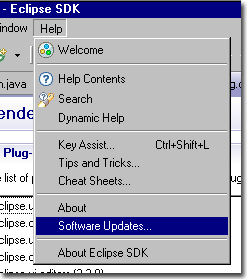
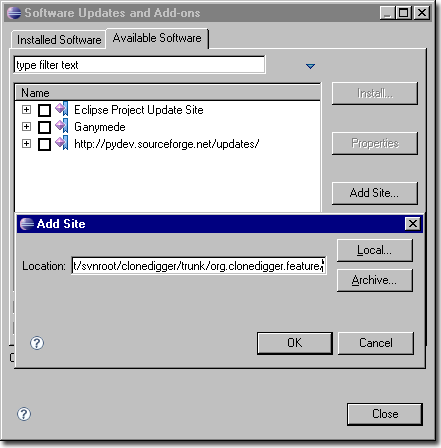
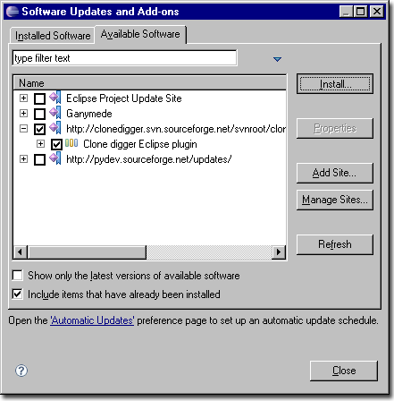
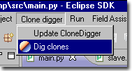
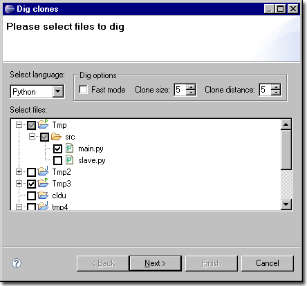
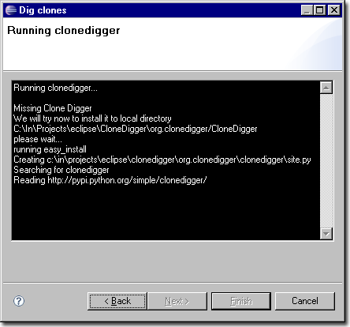
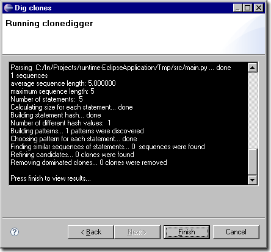
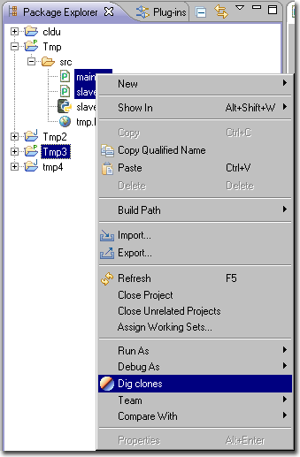

Go to the update manager (inside the help menu) and add update site: http://clonedigger.svn.sourceforge.net/svnroot/clonedigger/trunk/org.clonedigger.feature/ (Eclipse should do the rest)
 Now, you can check your projects for clones. Just run clonedigger wizard from main menu.
On the first page of a wizard you may select files to dig, choose language (for now clonedigger support only java and python) and select digging options (fast mode clone size and clone distance). Click "next" button when you will ready .
On the first run plugin will try to download the last version of clonedigger from PyPi repository.
After that you will see the console output during the dig phase. When Clone Digger will ready you may press final button.
Now you will see the report. Before each clone there is a "Go to this fragment in Eclipse" link, you may follow this links to automatically find and select clone in eclipse environment.
Tip: be careful! When you will edit your code and add some new lines to it report will gone out of sync and "Go to this fragment in Eclipse" links will be broken.
Feature: you may run clonedigger wizard from project tree, just select desired files or folders by holding {ctrl} button and this file will be checked on the first wizard page when it appear.
You can update clonedigger instance in plugin by clicking Update CloneDigger menu item. CloneDigger will be downloaded next time you run the wizard.
by Anatoly Zapadinsky